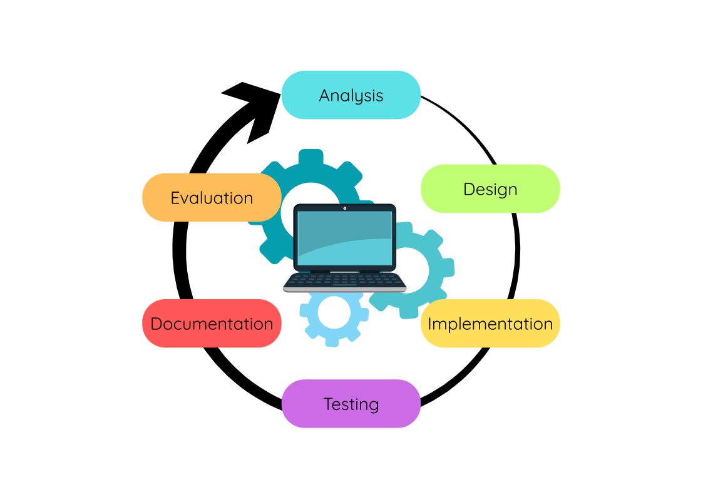
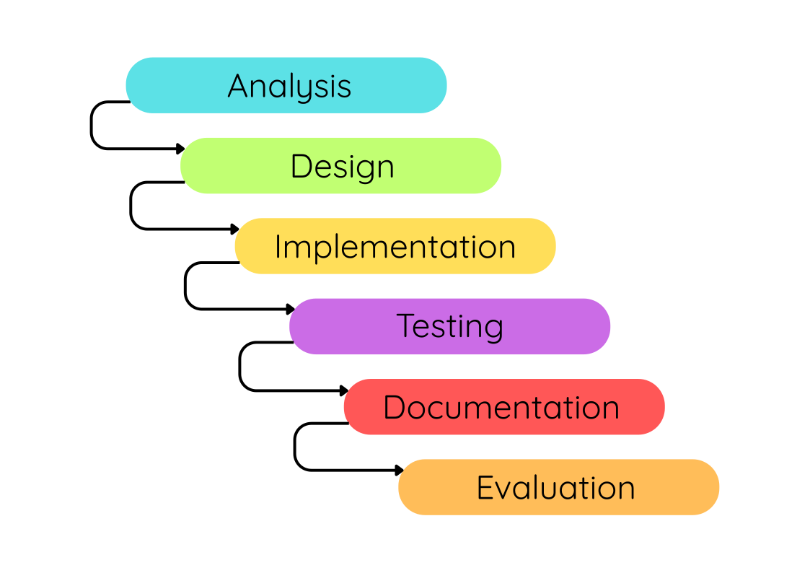
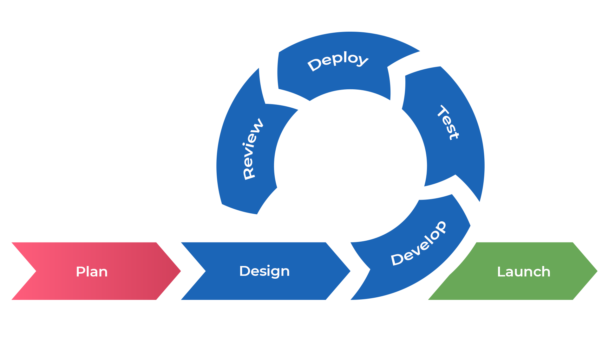

Development Methodologies
What you need to know
You must be able to describe and compare the development methodologies:
- iterative development process
- agile methodologies
The Software Development Lifecycle

The Software Development Lifecycle is generally an iterative process that consists of six stages:
- Analysis - to fully understand the problem and what the program must do
- Design - to plan how the program will work before building it
- Implementation - to write the actual code
- Testing - to check that the program works correctly and meets the requirements
- Documentation - to produce materials that help users and future developers understand and use the software.
- Evaluation - to judge how successful the software is
The Waterfall Method
A traditional method of software development is called the Waterfall Method.

The Waterfall Method is classified as a linear development process, as the developer or development team works through each stage sequentially with little to no involvement from the client until the final product is delivered.
Although it is classified as a linear development process, in practice it is often necessary to revisit earlier stages. For example, if an issue is discovered during testing, the team may need to go back and revise the design, reimplement it, and test it again.
In the early days of software engineering, this process made sense.
However, it is rarely used in modern software development due to its lack of flexibility.
In the real world, many developers use Agile methods.
Task One: Waterfall Analysis
A company is developing software to control traffic lights across a city.
- Describe one advantage of using the Waterfall Model for this project.
- Describe one disadvantage of using the Waterfall Model for this project.
- Explain why the advantage you identified is particularly important for this type of software.
- Evaluate whether Waterfall is the most suitable methodology for this project.
In your answer:
- Consider reliability.
- Consider client requirements.
- Consider changes during development.
- Reach a justified conclusion.
Agile Methods
Agile is considered more flexible than traditional iterative methods.
Instead of following a rigid sequence of stages, Agile breaks the project down into smaller, manageable units of work based on what the client needs known as User Stories.
Each of these User Stories are included in the overal Software Development Plan. The Software Development Plan will also idnetify the timescale for which each User Story should be completed.
Teams of developers will work in shorts “sprints” to produce working prototypes which can be tested by the client.

Each sprint typically lasts one to four weeks and involves a cycle of planning, design, implementation, and testing. This approach allows teams to produce working software early and update it frequently based on feedback.
A key benefit of Agile is its emphasis on collaboration and adaptability. Stakeholders, including clients and end-users, are involved throughout the development process, not just at the beginning or end. This ongoing communication helps ensure that the software continues to meet the users’ needs as they evolve.
By regularly reassessing priorities and making improvements at each step, Agile teams can respond to changes quickly—something that is much harder to do with more traditional methods like Waterfall. As a result, Agile has become one of the most widely adopted methodologies in modern software development.
Task Two: Understanding Iteration
A client requests a mobile app for ordering food.
- Explain what is meant by iteration in software development.
- Describe how the software might move between:
- Design and Implementation
- Implementation and Testing
- Explain why iteration can improve the final product.
- A client requests a major change after testing has begun. Explain how:
- Waterfall would deal with this change.
- Agile would deal with this change.
- Which approach would be more effective? Justify your answer.
For a useful comparison of waterfall vs. agile watch the video below:
Advantages/Disadvantages
- Advantages
-
The Waterfall model is well suited to large-scale projects and big development teams, especially when there is a long lead time. Since the client is usually less involved once development begins, they must clearly define their requirements at the start, as this forms part of the legally binding contract.
-
This model focuses more on producing high-quality software than on rapid development. As a result, the software tends to be thoroughly tested and contains fewer bugs. Projects using the Waterfall approach are often completed on schedule and within budget.
-
Setting clear milestones at the beginning of the project helps both the development team and the client monitor progress more easily.
- Disadvantages
-
One of the main drawbacks of the Waterfall model is its rigid, step-by-step structure, which makes it difficult to change the plan once development has started. Since client input is usually only gathered at the beginning of the project, they are not involved throughout. This means that if the client is unsure about what they need at the start or if their requirements change during the project, the final software may not meet their expectations.
-
Another issue is that once the software reaches the testing stage, making changes can be challenging. If updates are needed at that point, it can take extra time and increase costs.
-
To reduce this problem, it can help to involve clients at key points during the project so that adjustments can be made earlier in the process.
- Advantages
-
Agile is ideal for smaller projects, such as developing or regularly updating apps, and works well with small development teams. The client is actively involved throughout the entire development process, and regular feedback is gathered.
-
This close collaboration helps ensure that the final product closely matches what the client wants, even if their initial requirements were unclear. Agile also offers flexibility—if the client changes their mind or wants to add new features, these changes can usually be made without too much difficulty.
- Disadvantages
-
The Agile methodology has several drawbacks. Initially, there's often no formal, legally binding contract, which can be problematic given the evolving nature of client requirements. Furthermore, Agile is not well-suited for extensive projects or large teams. Clients must also be ready to dedicate significant time to the project, as their continuous involvement is essential.
-
Another major disadvantage lies in the stringent sprint deadlines, which can lead to incomplete projects. In such cases, the client may face increased costs to finalize the project, or they might have to accept a deliverable with a considerably reduced scope. The frequent updates inherent in Agile can also be challenging to monitor and necessitate rigorous version control for each iteration or update.
Task Three: Agile Features Investigation
Complete the table in your document.
For each feature, include:
- Explanation
- Benefit
- Drawback
Features:
- Iterative
- Agile
- Client Interaction
- Teamwork
- Documentation
- Measurement of Progress
- Adaptive vs Predictive
- Testing
Iterative vs. Agile Development Processes (Key Points Comparison)
| Iterative | Agile | |
|---|---|---|
| Client Interaction | The client is usually involved only at the analysis and evaluation stages. There is little to no client input during design, implementation, and testing phases. | Agile encourages frequent client feedback throughout the project. Ongoing collaboration helps shape the product and ensures it meets client needs. |
| Teamwork | Separate teams handle different phases independently, such as design, implementation, and testing. Communication between teams can be limited, potentially causing delays if issues arise. | Agile teams are cross-functional and collaborative, combining designers, developers, and testers who work together continuously with rapid communication and shared goals. |
| Documentation | Relies on a single, detailed project specification created at the start, which guides the entire project. Changes late in the project can be costly. | Minimizes formal documentation, favouring lightweight, flexible documents created as needed. Focus is on working software and communication over paperwork. |
| Measurement of Progress | Progress is measured by completing each phase in order, with the final product delivered at the end for client evaluation. | Progress is measured by how quickly features are delivered and demonstrated. Agile teams deliver working software regularly with frequent client feedback. |
| Adaptive vs Predictive | Iterative development is more predictive, relying on detailed upfront planning and following a set sequence of phases. | Agile is highly adaptive, embracing change and continuously adjusting based on feedback and testing throughout the project. |
| Testing | Testing happens mainly after implementation in a distinct phase, often late in the process, risking discovering problems late. | Testing is continuous and integrated throughout development. Each part is tested as it is built, reducing costly late fixes. |
Tasks Four and Five: Case Studies
Task Four - Case Study: Microsoft
Microsoft is developing a new version of Windows.
- Recommend a development methodology.
- Analyse how the methodology would support:
- large development teams
- testing
- customer feedback
- changing requirements
- Evaluate whether the alternative methodology could still be used successfully.
- Explain what problems could occur if Microsoft used the alternative methodology.
Task Five - Case Study: Small Business
A medium-sized company requires a payroll system. The requirements are well understood, but legislation may change during development.
- Recommend a methodology.
- Justify your choice.
- Explain why the alternative methodology might still be appropriate.
- Reach a conclusion.